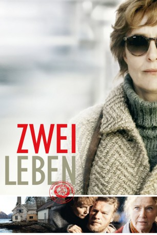

#5067 Zwei Leben
 
 IMDB-Wertung: 7.1 / 10
IMDB-Wertung: 7.1 / 10  Metascore: 0
Metascore: 0 
1990 - Katrine lebt schon lange glücklich mit ihrer Familie in Norwegen, nachdem ihr vor mehr als 20 Jahren die Flucht aus der DDR gelungen war. Sie war dort in einem Waisenhaus aufgewachsen, da man sie während der Besatzungszeit im 2.Weltkrieg ihrer Mutter Ase weg genommen hatte. Ihr Vater war ein deutscher Wehrmachtssoldat und Kinder aus diesen Beziehungen galten unter den Nationalsozialisten als rassisch besonders rein. Doch Katrine, inzwischen selbst Großmutter und glücklich mit ihrem Mann Bjarte, hat diese Zeit schon lange hinter sich gelassen, bis der junge deutsche Anwalt Sven Solbach vor ihrer Tür steht, der sie um ihre Mithilfe bittet. Kurz nach dem Fall der Mauer hatte er begonnen, die Bundesrepublik Deutschland als Rechtsnachfolger des Nazi-Regimes zu verklagen, weil die Wegnahme der Kinder ein schweres völkerrechtliches Verbrechen war...
Jahr: 2012
Dauer: 95 Minuten
FSK: 12
Land: Deutschland Studio: Farbfilm-VerleihTonspuren:
Untertitel:
Auflösung: 1080p (1920x816) Größe: 6891 MB
Genre: Thriller, Drama
Regisseur: Georg Maas, Judith Kaufmann
Drehbuch: István Békeffy
Soundtrack:
Darsteller:
 Juliane Köhler als Katrine Evensen Myrdal
Juliane Köhler als Katrine Evensen Myrdal Liv Ullmann als Ase Evensen
Liv Ullmann als Ase Evensen Julia Bache-Wiig als Anne Myrdal
Julia Bache-Wiig als Anne Myrdal Ken Duken als Sven Solbach
Ken Duken als Sven Solbach Rainer Bock als Hugo
Rainer Bock als Hugo Vicky Krieps als Kathrin Lehnhaber
Vicky Krieps als Kathrin Lehnhaber- Dennis Storhøi als Lawyer Hogseth
 Ursula Werner als Hiltrud Schlömer
Ursula Werner als Hiltrud Schlömer Thorbjørn Harr als Young Bjarte Myrdal
Thorbjørn Harr als Young Bjarte Myrdal Daniel Krauss als German TV Journalist
Daniel Krauss als German TV Journalist- Sven Nordin als Bjarte Myrdal
- Thomas Lawincky als Kahlmann
- Klara Manzel als Young Katrine Evensen
- Jürgen Rißmann als Detective Lattoch
- Ralf Dittrich als Caretaker Sonnenwiese
 Christian Steyer als Archivist
Christian Steyer als Archivist- Ellen Brigitte Winthe als Marit
- Mathias Harrebye-Brandt als Danish Interrogator
 Holger Handtke als German Interrogator
Holger Handtke als German Interrogator- Sergey Chornyy als Russian Business Partner
- Vitaly Golik als Russian Business Partner
- Tatjana Berges als Russian Business Partner
- Christoph Maria Glaser als Strassbourg Committee
- Hubert Weber als Strassbourg Committee
- Daniel Offermann als Strassbourg Committee
- Kirsten Selbach Böke als Danish Police Officer
- Svenja Lange als Danish Secretary
- Peter Frohnert als Danish Superior
- Nikolaus Benda als Young Marine
- Marie Grung als Stewardess
- Aurora Aloysius Jensen als Turid
- Felix Vial als Turid
Datei: X:\2012(N-Z)\Zwei Leben (2012, FSK12, 1920x816).mkv seit 22.12.2016
Festplatte: HD 2012(N-Z)-2013(A-H)
 Es gibt insgesamt 138 Filme in der Gruppe '2012(N-Z)'
Es gibt insgesamt 138 Filme in der Gruppe '2012(N-Z)'